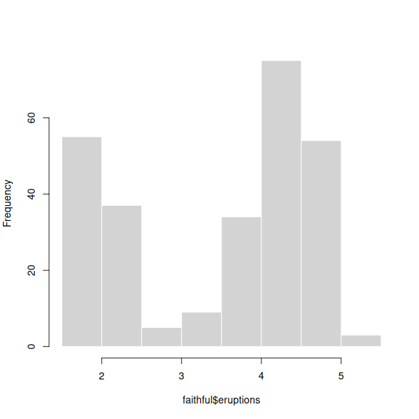
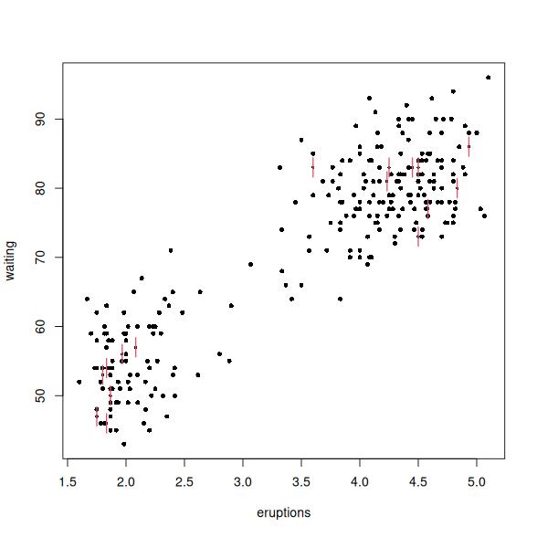
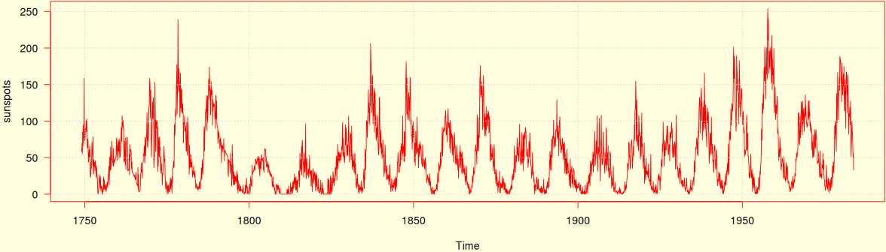

Place two plots side by side via the width attribute:
hist(faithful$eruptions, main = '', border = 'white')
sunflowerplot(faithful)


1 Exploring the faithful dataset.
A full-width figure (requires the @article CSS):
par(mar = c(4, 4, .1, .1), bg = 'lightyellow', fg = 'red', las = 1)
plot(sunspots, col = 'red')
grid()

2 Monthly mean relative sunspot numbers from 1749 to 1983.
Feel free to experiment with other class names provided by the @article CSS, such as .side .side-right or .embed-right in addition to .fullwidth.